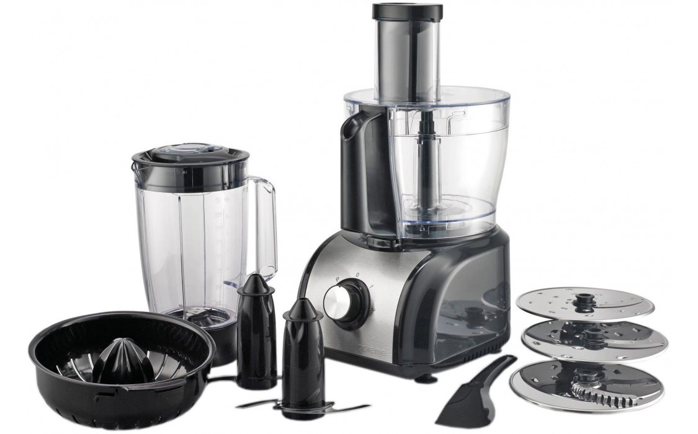
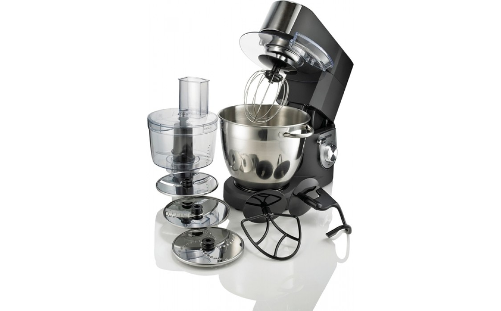

Кухонний комбайн Gorenje
SBR1000BE
Код 1080450
Загальні характеристики
Тип - кухонний комбайн
Споживана потужність - 800 Вт
Ємність чаші - 2,4 л
Ємність склянки для блендера - 1,5 л
Блендер +
Шинковка +
Насадки міні-подрібнювач
Кухонна машина Gorenje
MMC1500BK
Код 1121689
Загальні характеристики
Тип - кухонна машина
Споживана потужність - 1500 Вт
Регулятор швидкості +
кількість швидкостей - 6
Кількість приводів - 3
Ємність чаші - 6,7 л
Вихід тіста - 2,3 кг